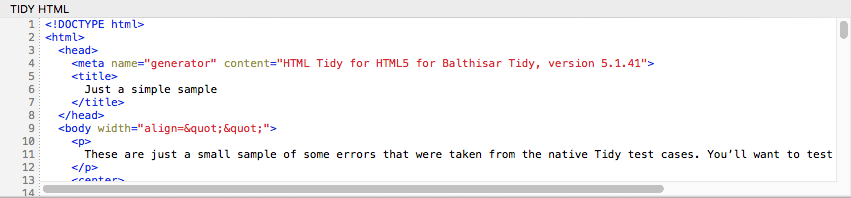

The Tidy HTML Area
Balthisar Tidy for Work’s result is displayed in the Tidy HTML pane. When you save the document, this is the file that will be written to disk.

Because Tidy can be very strict, and because HTML standards sometimes change, it’s a good idea to review this Tidy’d text before saving your document. It’s possible (although unlikely) that Tidy removes something that you don’t want removed.
Also refer to the Saving preferences, which offer a way to prevent you from overwriting your original files.